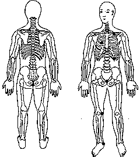

Sequência da Energia Ascendente Anterior.
Revitaliza a energia da Função do Baço. Reduz a preocupação, acalma os nervos e fortalece a função digestiva .
|
M.e. base da coluna (cóccix); M.d. colocar a mão sobre a face interna do tornozelo, entre o osso do tornozelo e o calcanhar direito TSE 5 ou na face interna do joelho direito ou sobre o osso púbico. M.e. permanece na base da coluna (cóccix); M.d. deslocar a mão para o peito parte inferior esquerda da caixa torácica TSE 14.
M.d.
permanece no peito parte inferior esquerda
da caixa torácica TSE 14;
M.e. deslocar para o centro da costela direita no peito
centímetros abaixo da clavícula direita TSE 13.
M.d.
permanece no peito parte inferior esquerda
da caixa torácica TSE 14;
M.e. deslocar para o centro da clavícula esquerda
TSE 22.
|
 |